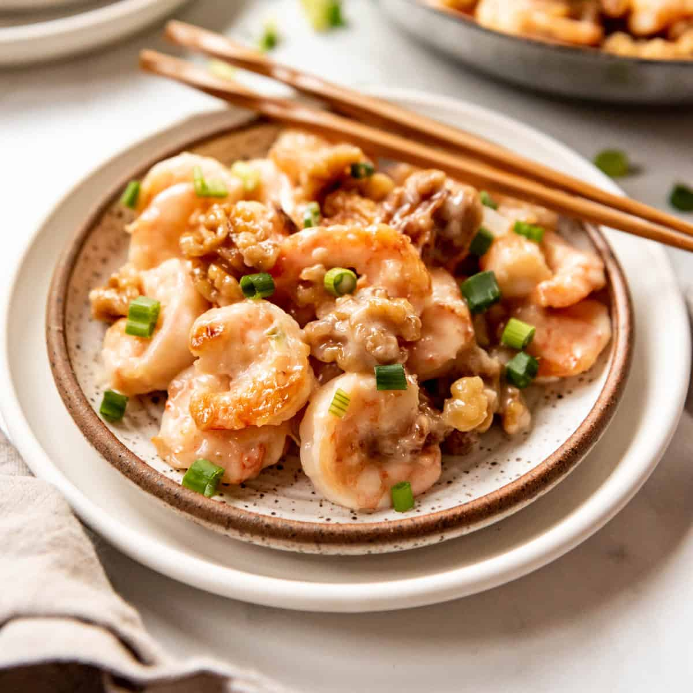

Home
Honey Walnut Shrimp

Ingredients
- 1 cup water
- ⅔ cup white sugar
- ½ cup walnuts
- 4 large egg whites
- ⅔ cup mochiko (glutinous rice flour)
- 1 cup vegetable oil for frying
- 1 pound large shrimp, peeled and deveined
- ¼ cup mayonnaise
- 2 tablespoons honey
- 1 tablespoon canned sweetened condensed milk
Steps
- Gather all ingredients.
- Ingredients to make honey walnut shrimp
-
Stir water and sugar together in a small saucepan over high heat. Bring
to a boil and add walnuts. Boil for 2 minutes, then drain and place
walnuts on a cookie sheet to dry.
- A small pot with walnuts simmering in sugar and water
-
Whip egg whites in a medium bowl until foamy. Stir in mochiko until it
has a pasty consistency.
- A bowl of whipped egg whites mixed with mochiko flour
-
Heat oil in a heavy deep skillet over medium-high heat. Dip shrimp in
mochiko batter, then fry in batches in hot oil until golden brown, about
5 minutes.
- A battered piece of shrimp, frying in a large pot of oil
- Remove with a slotted spoon and drain on paper towels.
- A paper towel-lined baking sheet with fried shrimp
-
Stir together mayonnaise, honey, and sweetened condensed milk in a
medium serving bowl.
- A bowl of honey, mayonnaise, and sweetened condensed milk
-
Add fried shrimp and toss to coat with sauce. Sprinkle candied walnuts
on top and serve.